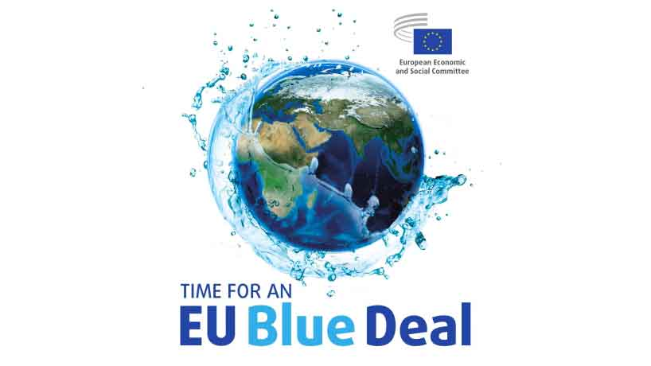

L’acqua, risorsa indispensabile per la vita e per l’economia, rappresenta una delle sfide sul fronte della sostenibilità e della transizione green che maggiormente dovrebbe attrarre l’attenzione degli investitori. Per questo motivo, da tempo, si parla della realizzazione di un Blue Deal che, alla stregua del Green Deal e in stretta correlazione con esso, dovrebbe regolamentare e pianificare a livello europeo tutte le iniziative per la salvaguardia dell’oro blu.
